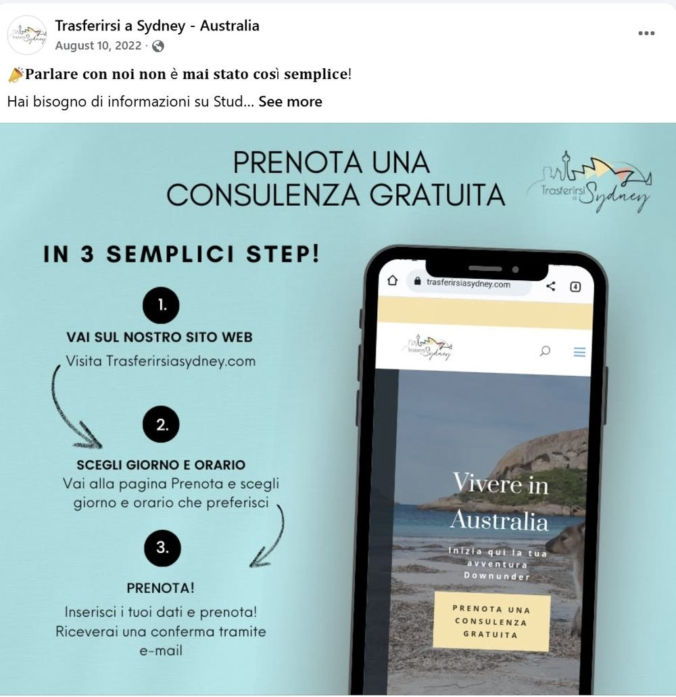
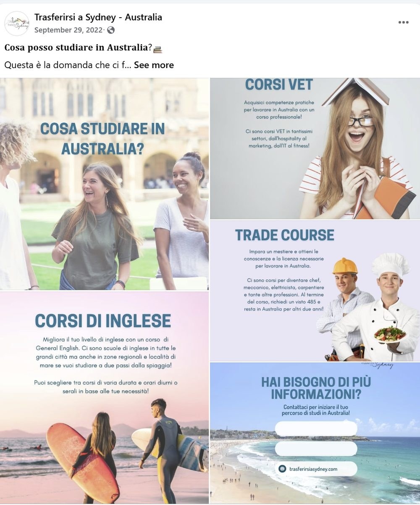
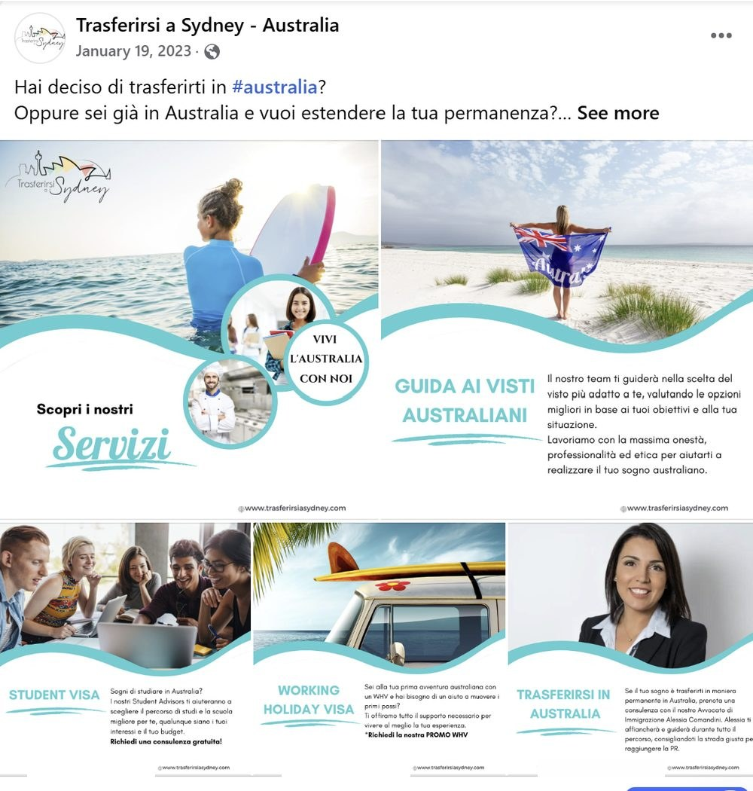
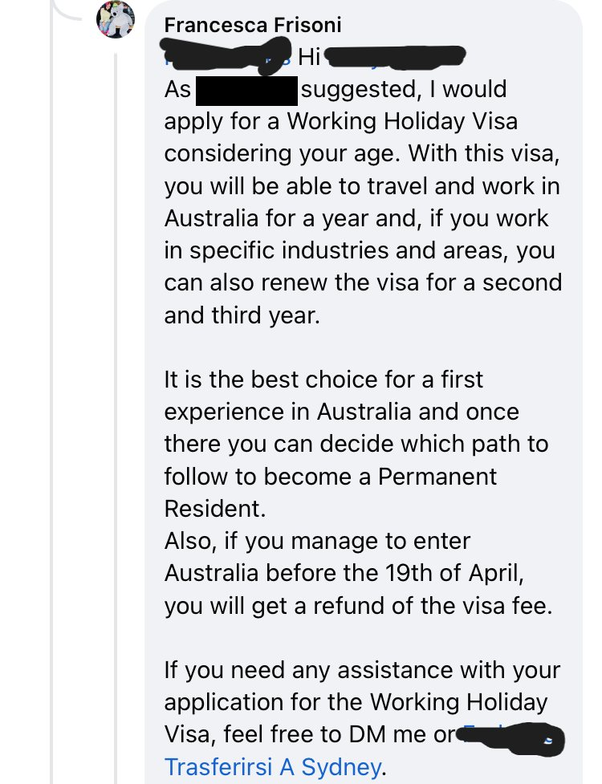
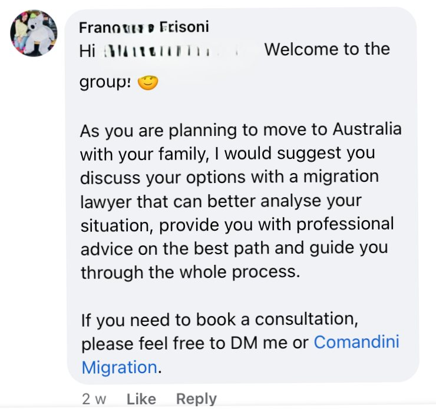
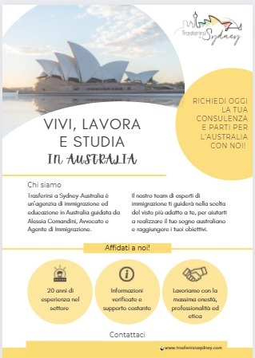
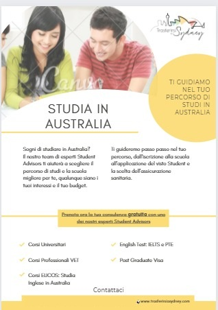

Website for Comandini Migration · WordPress with the Divi theme
I did everything on this site: the design, all the text and the basic SEO. It is an Italian-language site with pages for visas, courses, booking a consultation, guides and e-books, and a blog. I also write the blog posts and newsletters.
Ran the company's two Facebook groups, in Italian ("Trasferirsi a Sydney-Australia") and English ("Moving to Australia", around 20,000 members).
Planned, designed and wrote Facebook posts, and planned Instagram posts, reels and videos, about courses and migration news.
Wrote and designed flyers, and wrote newsletters and blog posts for the website.
Found new leads by helping people who wanted to move to Australia.
Facebook posts I designed and wrote for the company page. The posts are in Italian.

10 Aug 2022 · How to book a free consultation in 3 steps

29 Sep 2022 · What can I study in Australia? VET, trade and English courses

19 Jan 2023 · The company's services: visas, student visa and working holiday visa
Two of my replies to enquiries in the "Moving to Australia" group, which has around 20,000 members. Names are hidden.

Reply to a visa enquiry: Working Holiday Visa advice

Welcome and advice for a family planning to move to Australia
Design and writing
Flyers and free e-books
Trasferirsi a Sydney · Italian-language materials
I wrote and designed two flyers for the company. One introduces the team and what they offer. The other presents the study in Australia service.

Company flyer: who we are and what we offer

Study flyer: courses, English tests and a free consultation
I also wrote and designed free e-books for the website. They include guides to the best websites for finding work and for finding accommodation in Australia.
Wrote website copy, email campaigns, blog posts, e-books and social posts in one brand voice.
Researched and planned content for the company's website, videos and book publications.
Updated older content to rank better in search.
Translation
Freelance translator
Self-employed · Jan 2016 – present
Translated text and audio between English, Spanish and Italian.
Kept the meaning and tone of the original, then proofread every piece.
Reviews from clients are on my Upwork profile.
Case study
Do AI tools mention and link UTS?
GEO research on Sydney universities · November 2026
I tested how AI tools answer questions from international students who are looking for a course in Sydney. I asked 5 questions in ChatGPT, Perplexity, Gemini, Google AI Overviews and Claude. For each answer, I recorded which universities were mentioned and which were linked to their own website.
Main finding: UTS was mentioned in 72% of answers, tied for second place. But its own website was linked in only 28% of answers, the lowest of the top four universities. Some tools linked to agency sites or Google Maps instead of the university.
With Claude's help, I also reviewed two UTS international student pages and wrote recommended changes, such as adding tuition fees and application dates, and showing a "last updated" date.
How I did this: I designed the study, ran the AI checks and recorded the results myself. I used Claude to help build the tools and draft the report.